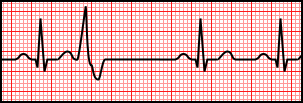
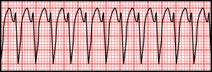
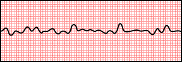
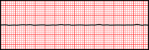

心室性心律不整起源於心室肌肉本身，跳過了正常的傳導路徑，QRS通常寬大變形。這一章的內容跟急救現場關係密切，尤其VT與VF，是需要立即辨識、立即處置的節律。
正常訊號會沿著希氏束、左右束支、浦金氏纖維這條「高速公路」傳遞，讓兩側心室幾乎同步去極化，所以QRS又窄又快。但心室性心律不整的訊號起源於心室肌肉本身（不是經由正常傳導系統），電流只能靠心肌細胞一個接一個緩慢傳遞，兩側心室無法同步收縮，因此QRS會寬大（>0.12秒）且形狀怪異——這是辨識心室性心律不整最重要的第一眼線索。




心室內某個異位點提早放電，特徵是：提早出現、QRS前面沒有相對應的正常P波、QRS寬大變形，之後通常接著一個代償性停頓（因為這個異位訊號通常不會逆傳影響SA node的下一次放電）。健康人也可能偶爾出現PVC，跟疲勞、咖啡因、電解質不平衡（尤其低血鉀、低血鎂）都有關；但頻繁出現、多型性（形狀不一致，代表來自多個不同病灶）、或連續出現時臨床意義較大，需要進一步評估。
| 型態 | English | 說明 |
|---|---|---|
| 二連律 | Bigeminy | 每一個正常心搏後就接一個PVC，規律交替出現 |
| 三連律 | Trigeminy | 每兩個正常心搏後接一個PVC |
| 單形性 | Unifocal PVC | PVC形狀都一樣，來自同一個病灶 |
| 多形性 | Multifocal PVC | PVC形狀不一致，來自多個不同病灶，臨床意義較大 |
定義是連續3個以上的PVC，形成寬QRS、規則、快速（常見150-250次/分）的頻脈。依QRS形狀是否一致，分為：
VT病人是否仍有脈搏（有無心輸出）會直接影響處置方向：有脈搏的VT可能需要藥物或整流；無脈搏VT則等同心跳停止，處置方式與心室顫動相同（CPR＋立即電擊去顫）。心電圖上看到VT，一定要同時評估病人的意識與脈搏，不能只看波形。
心室肌肉完全喪失組織化的收縮，變成混亂顫動，心電圖上完全看不到可辨識的P波、QRS、T波，只有振幅與間距都毫無規律的雜亂波形。此時心臟沒有任何有效的血液輸出，等同於心跳停止，需要立即CPR並儘快電擊去顫，是急救現場最優先辨識的致命心律之一。
回顧第1章提過的備援機制：如果上游節律點（SA node、AV node）都故障或訊號傳不下來，浦金氏纖維會以自身較慢的節律性（20-40次/分）接手，形成心室脫逸心律（ventricular escape rhythm）——QRS寬大但速率緩慢、規則，這是心臟的「最後防線」，處置原則是找出並處理上游故障的原因，而不是把它當成需要電擊的心律。
心電圖靜止（Asystole）則是完全平坦的一直線，代表連最後防線都失去了電氣活動——這時要立即CPR，但不予電擊（電擊對完全沒有電氣活動的心臟無效），需要藥物與高品質CPR為主的急救流程。
看到「寬QRS的頻脈」不能直接斷定就是VT——快速心房性心律不整（如SVT）如果合併束支傳導阻滯，QRS也會變寬，稱為「差異性傳導（aberrancy）」，外觀跟VT可能很像。臨床上有專門的鑑別準則，但實務原則是：不確定來源的寬QRS頻脈、病人血行動力學不穩定時，優先當作VT處理（因為把VT誤判成SVT延誤處置的風險，遠大於相反的情況）。